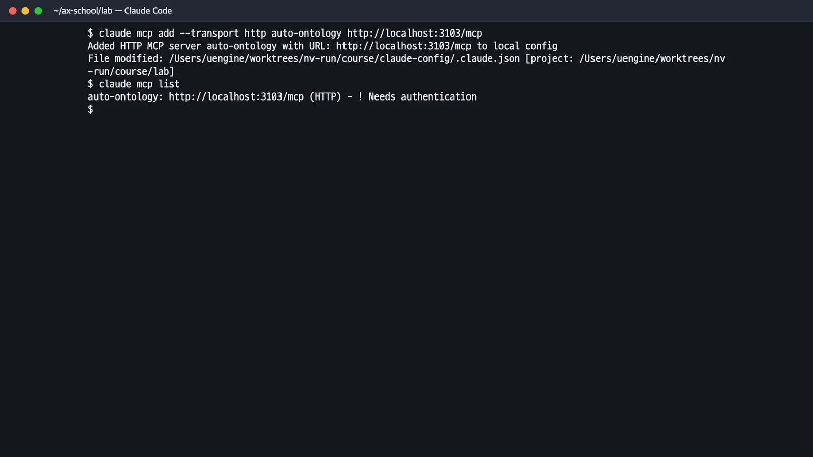
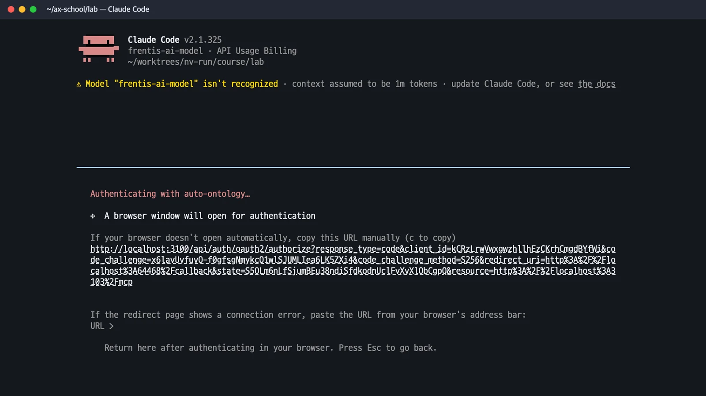
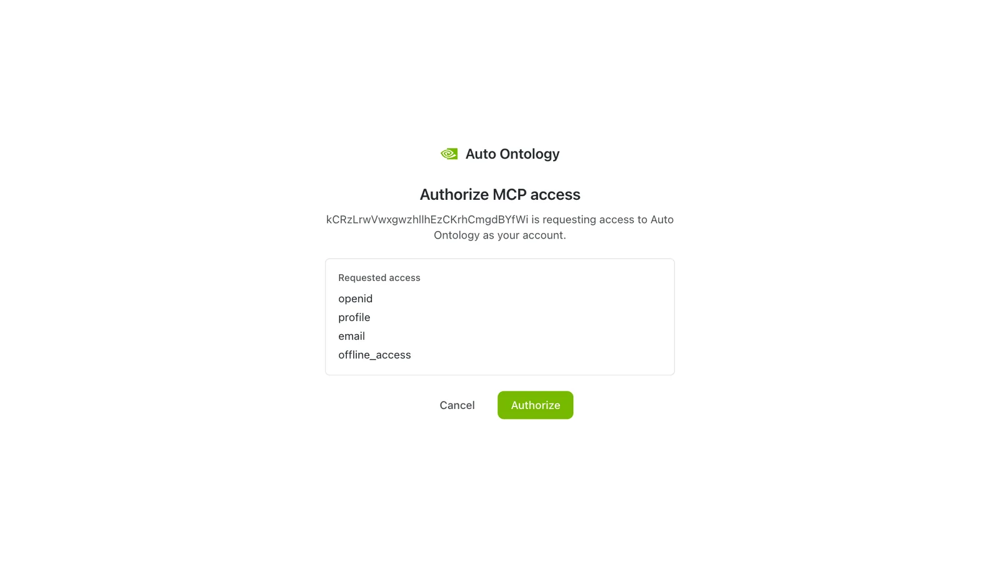
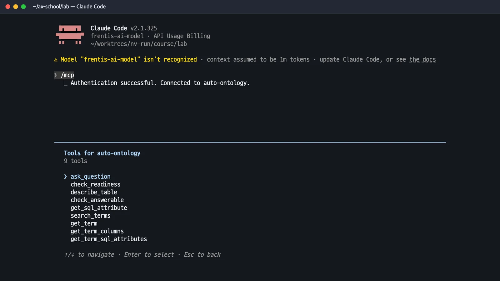
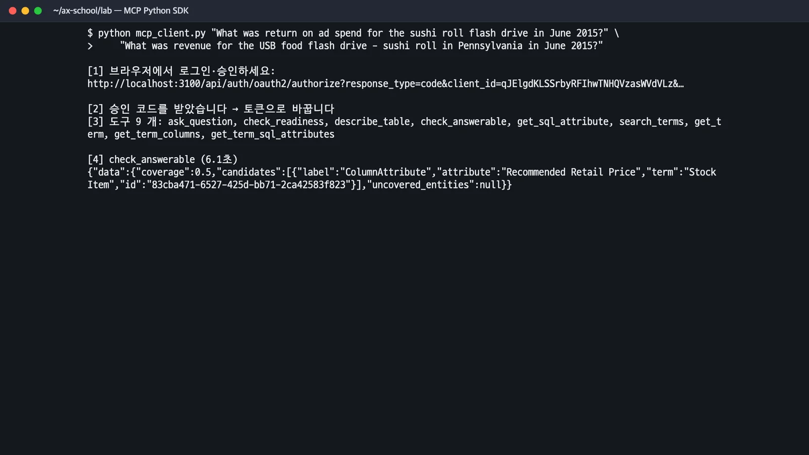
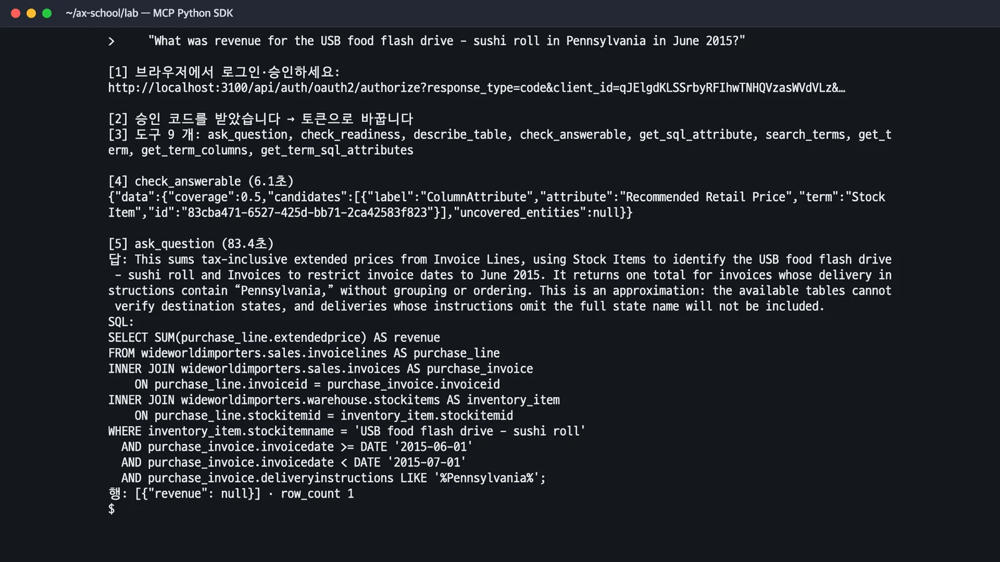

Auto Ontology의 MCP 서버는 의미 계층을 읽기 전용 도구 아홉 개로 제공합니다. 클라이언트 설정에는 주소만 넣고, 사람이 Auto Ontology에 로그인해 승인하는 OAuth로 연결합니다. Claude Code를 연결해 도구 목록까지 확인하고, 공식 MCP 파이썬 SDK로 만든 작은 클라이언트로
check_answerable과ask_question을 실제로 불러 봅니다.
무엇을 · 왜#
MCP(Model Context Protocol)는 에이전트가 외부 도구를 호출하는 표준 규약입니다. Auto Ontology의 MCP 서버(공식 포트 3003)는 웹 앱(3000)의 공개 API를 부르는 클라이언트일 뿐이라서, DB 비밀번호나 모델 설정을 갖지 않습니다. 대신 호출한 사람의 권한으로 동작합니다. 공식 문서의 표현대로 "a viewer gets a viewer's answers"입니다.
| 일 | 도구 |
|---|---|
| 준비 확인 | check_readiness — 이 배포가 답할 수 있는 상태인가(의미 계층과 DB 연결) |
| 용어 | search_terms · get_term · get_term_columns · get_term_sql_attributes · get_sql_attribute · describe_table |
| 답할 수 있나 | check_answerable — 질문의 개체를 의미 계층이 얼마나 포함하는지(가볍고 빠름) |
| 질문 | ask_question — 답, 실행한 SQL, 행을 따로따로 돌려줌(Chat과 같은 에이전트, 수십 초 이상) |
모두 읽기 전용입니다. 용어집·카탈로그·원천 DB를 바꾸는 도구는 없고, 원천의 스키마·열을 직접 훑는 도구도 일부러 두지 않았습니다. 에이전트가 날것의 표가 아니라 의미 계층을 거쳐 데이터에 접근하게 하려는 설계입니다.
인증은 OAuth만 받습니다. 7장의 API 토큰을 MCP 요청에 넣으면 401 Unauthorized가 돌아옵니다. 공식 문서도 "There is no way to configure a token for the server itself."라고 적었습니다. 서버 하나에 토큰을 고정해 두면 모든 사용자가 그 토큰 주인의 권한으로 동작하게 되기 때문입니다.
따라 하기 1: Claude Code를 연결하기#
공식 README는 Cursor와 Claude Desktop 설정을 예로 듭니다. 이 교재는 Claude Code로 연결합니다. 공식 Docker 배포라면 주소는 http://localhost:3003/mcp이고, 이 교재의 실행은 :3103입니다.
- 서버를 추가합니다. 실습 폴더에서 실행합니다. 설정에는 주소만 들어가고 비밀값은 없습니다.
목록에
claude mcp add --transport http auto-ontology http://localhost:3103/mcp claude mcp listauto-ontology: http://localhost:3103/mcp (HTTP) - ! Needs authentication이 나오면 정상입니다. 아직 로그인하지 않았다는 뜻입니다.
claude mcp add와 list — Needs authentication - Claude Code에서 로그인합니다.
claude를 실행하면 「1 MCP server needs authentication · run /mcp」가 보입니다./mcp→ auto-ontology → Authenticate를 고르면 브라우저가 열리고, 열리지 않으면 화면의 주소를 복사해 엽니다.
/mcp → Authenticate — 로그인 주소 - 브라우저에서 로그인·승인합니다. Auto Ontology의 평소 로그인 화면이 나오고, 로그인하면 Authorize MCP access 화면에서 요청 권한(openid · profile · email · offline_access)을 보여 줍니다. Authorize를 누르면 「Authentication successful」이 뜨고, Claude Code에는 「Authentication successful. Connected to auto-ontology.」가 나옵니다. 클라이언트는 Auto Ontology에 스스로 등록되므로, 클라이언트 ID나 비밀번호를 미리 만들 필요가 없습니다.

Authorize MCP access — 승인 화면 - 도구를 봅니다.
/mcp→ auto-ontology → View tools에서 도구 아홉 개를 확인합니다.
Claude Code에서 본 auto-ontology 도구 9개
이 교재의 Claude Code 화면에 대해
사용자 계정·설정과 섞이지 않게, 이 교재의 Claude Code는 따로 둔 설정 폴더에서 사내 모델 게이트웨이(Frentis)에 연결해 실행했습니다. 연결·로그인·도구 목록까지는 문제없었지만, 도구 호출을 요청하면 그 게이트웨이가 API Error: 500 Internal server error로 거절했습니다(세 번 시도). 그래서 도구 호출은 아래와 같이 공식 MCP 파이썬 SDK 클라이언트로 시연했습니다. Anthropic 계정으로 로그인한 평소 Claude Code에서는 이 게이트웨이를 거치지 않지만, 이 교재에서 직접 확인하지는 못했습니다.
따라 하기 2: 도구를 불러 보기(MCP 파이썬 SDK)#
어떤 MCP 클라이언트든 하는 일은 같습니다. 서버가 401과 함께 알려 주는 인증 서버를 찾고, 클라이언트를 등록하고, 사람이 승인하면 토큰을 받아 도구를 부릅니다. 공식 MCP 파이썬 SDK(mcp 1.29.0)의 OAuthClientProvider가 이 흐름을 맡아 줍니다. 아래 클라이언트는 90줄 남짓이며, 토큰은 프로그램 메모리에만 둡니다.
auth = OAuthClientProvider(
server_url="http://localhost:3103/mcp",
client_metadata=OAuthClientMetadata(client_name="ax-school-mcp-client",
redirect_uris=["http://localhost:18765/callback"], scope="openid profile email offline_access"),
storage=MemoryStorage(), redirect_handler=open_login, callback_handler=wait_callback)
async with streamablehttp_client(MCP_URL, auth=auth, timeout=900) as (read, write, _):
async with ClientSession(read, write) as session:
await session.initialize()
await session.list_tools()
await session.call_tool("check_answerable", {"question": check_q})
await session.call_tool("ask_question", {"question": ask_q})
- 실행합니다. 첫 질문은
check_answerable에, 둘째 질문은ask_question에 넘깁니다.로그인 주소가 나오면 브라우저에서 열고, 1의 3단계와 같이 로그인·승인합니다.pip install "mcp>=1.29" python mcp_client.py "What was return on ad spend for the sushi roll flash drive in June 2015?" \ "What was revenue for the USB food flash drive - sushi roll in Pennsylvania in June 2015?" check_answerable결과를 읽습니다. 6.1초 만에 왔습니다.README 6단계는 같은 질문에 "coverage 0.5; no term covers "ad spend""를 보여 줍니다. 포함 비율 0.5는 같았습니다. 다만 이번 결과는 포함하지 못한 개체([4] check_answerable (6.1초) {"data":{"coverage":0.5,"candidates":[{"label":"ColumnAttribute","attribute":"Recommended Retail Price","term":"Stock Item", …}],"uncovered_entities":null}}uncovered_entities)를 비워 두었고, 상품 쪽 후보로 Stock Item의 「Recommended Retail Price」를 골랐습니다. 이 값만으로 「광고비 데이터가 없다」는 이유까지 읽어 내기는 어렵습니다.
MCP 클라이언트 — 도구 9개와 check_answerable 결과 ask_question결과를 읽습니다. 83.4초 걸렸습니다. 답·SQL·행이 따로 옵니다. 이번 답은 5장 끝에서 만든 Revenue 정의대로SUM(extendedprice)를 썼지만, 펜실베이니아를 고객의 배송 도시가 아니라 주문의 배송 메모(deliveryinstructions LIKE '%Pennsylvania%')로 걸러 빈 값(revenue: null)이 나왔습니다. 설명에는 「the available tables cannot verify destination states」라고 적혀 있었습니다.
MCP 클라이언트 — ask_question 결과(답·SQL·행)
같은 Q1이 화면(5장)과 API(7장)에서는 $588.80이 나왔고, MCP에서는 빈 값이었습니다. 세 번 모두 같은 모델(gpt-6.1-sol)이 답했습니다. 셋 다 설명 문장에 「Customers 표가 허용된 표 목록에 없다」는 말이 붙었는데, 질의 단계에서 고객 표가 후보로 잘 오르지 않는 것으로 보입니다. website 스키마의 고객 뷰가 따로 용어(Customer (wideworldimporters.website.customers))가 된 것이 원인일 수 있지만, 이 교재에서 확인하지는 못했습니다.
막히면#
막히면
401 Unauthorized·www-authenticate: Bearer … resource_metadata="…/.well-known/oauth-protected-resource/mcp"— MCP 요청에 API 토큰을 넣었습니다. → MCP는 OAuth만 받습니다. → 클라이언트 설정에는 주소만 넣고, 클라이언트가 띄우는 로그인·승인을 사람이 한 번 합니다. 사람의 개입 없이 실행되는 작업은 7장의 REST API를 씁니다.- 「Protected resource … does not match expected …」 — 클라이언트가 서버를 다른 이름으로 불렀습니다(대개
127.0.0.1대localhost, 공식 문서 안내). →AUTO_ONTOLOGY_MCP_PUBLIC_URL에 클라이언트가 쓰는 주소를 그대로 넣습니다. ask_question이 오래 걸리다 끊김 — 질문 하나에 몇 분이 걸릴 수 있습니다(5장). → 클라이언트의 시간 제한을 900초 정도로 둡니다. 서버 쪽은AUTO_ONTOLOGY_MCP_CHAT_TIMEOUT_S(기본 900)입니다.
확인 문제#
1. MCP 서버에 API 토큰을 줄 수 없게 만든 까닭은 무엇인가요?
서버에 토큰을 하나 고정해 두면 그 서버를 쓰는 모든 사람이 토큰 주인의 권한과 대화 기록으로 동작하게 되고, 프로토콜에서는 그것이 드러나지 않습니다. OAuth로 사람마다 로그인하면 호출한 사람의 권한으로만 동작합니다.
2. check_answerable과 ask_question은 언제 어떻게 나눠 쓰나요?
check_answerable은 질문의 개체를 의미 계층이 얼마나 포함하는지 확인하는 가벼운 사전 점검(이번 6.1초)이고, ask_question은 SQL을 짜서 실행하는 전체 에이전트(이번 83.4초)입니다. 포함 비율이 낮으면 먼저 질문이나 의미 계층을 손보고, 그다음에 ask_question을 부릅니다.
다음 장에서는 사람의 개입 없이 실행되는 스크립트가 쓰는 REST API와 API 토큰을 봅니다.